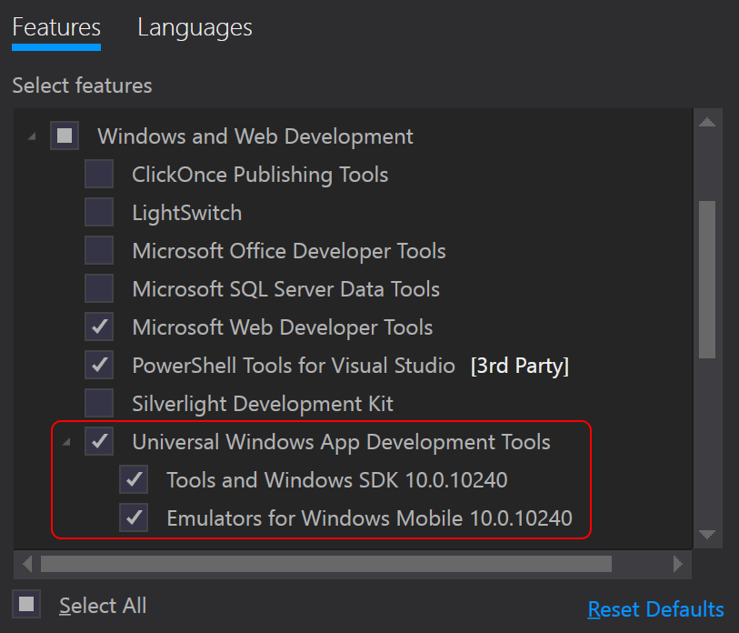

In this article, we will demonstrate getting started with xUnit.net, showing you how to write and run your first set of unit tests for your Universal Windows applications.
Note: The examples were done with xUnit.net v2.1. The version numbers and paths may differ for you, depending on which version you're using.
Before we get started, make sure you're using Visual Studio 2015 or later, and that you have the Universal Windows Application tooling installed (as shown here):

Let's start by creating a Windows Universal Unit Test library, targeting .NET 4.6 (or later).
Open Visual Studio, and choose File > New > Project:
This creates a unit test project with a reference to MSTest, which we can remove
by deleting the reference to MSTestFramework.Universal:

In Solution Explorer, find and open the project.json file. Add dependencies on
the xunit and xunit.runner.visualstudio packages (as shown below):
When you created the project, Visual Studio automatically created a file
named UnitTest.cs and opened it for you. Replace the contents
of that file with the following code:
Build the solution to ensure that the code compiles.
The xunit.runner.visualstudio package that you added earlier
allows you to run the tests inside of Visual Studio. To see the tests,
make sure your code has been compiled, and then show the Test Explorer
via Test > Windows > Test Explorer:

Before you run the tests, you need to tell Visual Studio where you want to run them. Since Universal Windows covers Windows 10 as well as Windows Mobile 10, you can use the drop down in the Standard toolbar to pick the runtime environment:

Some notes about your runtime environment choices:
Local Machine is only available if you're running Windows 10.Mobile Emulator options are virtual machines that run Windows Mobile 10, and
they require that you have Hyper-V installed and running. The first time you launch tests on
one of these emulators, it will take the system a few minutes to install and configure the VM.
Subsequent runs should be shorter (and will be nearly instant if you leave the VM running
between test runs).
Once you have selected your runtime environment, then you can click Run All to run
all your tests. Depending on which runtime environment you select, you may see the unit test
application launch on your local (or remote) machine, or you may see the Windows Mobile 10
UI pop up, to show your running test. Once the tests have finished running, their results
will show in the Test Explorer UI.
Now that we've gotten your first unit tests to run, let's introduce one more way to write tests: using theories.
You may have wondered why your first unit tests use an attribute named
[Fact] rather than one with a more traditional name like Test.
xUnit.net includes support for two different major types of unit tests:
facts and theories. When describing the difference between facts and theories,
we like to say:
Facts are tests which are always true. They test invariant conditions.
Theories are tests which are only true for a particular set of data.
A good example of this testing numeric algorithms. Let's say you want to test an algorithm which determines whether a number is odd or not. If you're writing the positive-side tests (odd numbers), then feeding even numbers into the test would cause it fail, and not because the test or algorithm is wrong.
Let's add a theory to our existing facts (including a bit of bad data, so we can see it fail):
{% highlight C# %} [Theory] [InlineData(3)] [InlineData(5)] [InlineData(6)] public void MyFirstTheory(int value) { Assert.True(IsOdd(value)); } bool IsOdd(int value) { return value % 2 == 1; } {% endhighlight %}This time when we compile and run our tests, we see a second failure, for our theory that was given 6 (since 6 is not an odd number):

Although we've only written 3 test methods, the runner actually shows 5 test cases, because the theory test has been split out into individually runnable test cases.